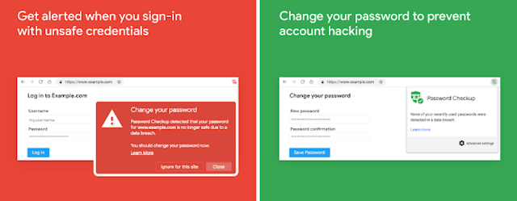
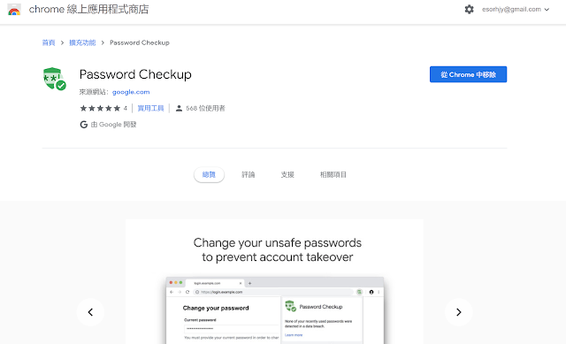
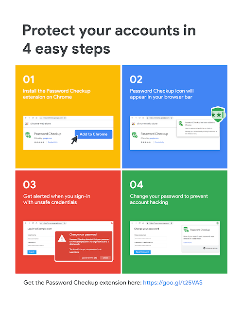
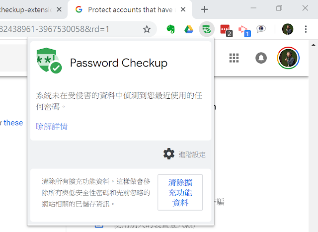

相信大家在新聞上都有看過「某個網站的大量用戶帳號密碼外洩、被駭」的消息，尤其知名網站的帳密資料外洩，總是讓每個用戶人心惶惶，因為可能我們也有這些網站的帳號密碼，而不確定自己的用戶資料是否在外洩名單中。
這些重要的外洩事件發生時，通常網路上也會出現一些「檢查工具」，讓你檢查自己有沒有在洩漏名單中。
而現在 Google 要幫我們「更自動化」的完成這個隨時檢查工作：
- 隨時自動檢查我們登入的帳號密碼，確認是否在外洩名單中。
- 不只檢查 Google 帳號，更要檢查你的其他網站，目前包含超過 40 億個已經被洩漏的用戶資料，支援大多數美國網站服務。
- 發現你的帳號密碼外洩時，還會主動提供是哪些網站有問題，告知你要更換哪些網站的帳號密碼。
- 上述動作，都只要安裝 Google 提供的「Password Checkup」，就能免設定全自動進行。
有興趣的朋友，可以在 Chrome 瀏覽器，安裝這款 Google 推出的「Password Checkup」。

這款套件的運作方式很簡單，如 Google 提供的下圖四個步驟。
只要安裝，不需設定，他就會在瀏覽器中自動運作。
而當我們每次登入各種網站服務時（目前號稱支援大多數美國的網站服務），這個套件就會自動檢查我們的帳號密碼，查看是否在已知的外洩資料庫中。
如果發現有安全疑慮，就會建議我們更換密碼，並提供我們哪些網站可能都必須更新密碼。

這個「Password Checkup」套件的另外一個特點，就是強調會「安全的」檢查我們的帳號密碼。
不會有任何人因為這樣的檢查而可以查看我們的帳密，所有帳密資料都是以加密方式在我們的本機儲存，並生成檢查後的警告。
我們還可以進一步在檢查到問題資料，並完成密碼修改後，手動到套件中，去清除儲存在本機的加密資訊。

在大量使用各種網站服務的現在，或許值得利用這樣一個來自相對可信任的 Google 的「隨時自動檢查」安全工具，即時得知自己的帳號密碼是否可能外洩，